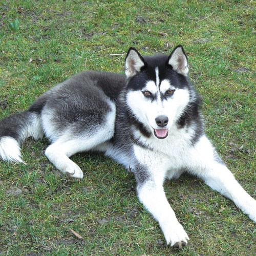

Owczarek Niemiecki

Jedna z ras psów należąca do grupy psów pasterskich sklasyfikowana do sekcji psów pasterskich (owczarskich). Według klasyfikacji FCI podlega próbom pracy. Zaliczany do psów obronnych. Typ wilkowaty.
Kiedy w Europie Środkowej rozwinął się ruch kynologiczny, a jednocześnie rozwój miast pociągnął za sobą wzrost przestępczości, zrodziło się zainteresowanie psem służbowym. W Niemczech utworzono związek, którego celem było popieranie hodowli psów owczarskich, w których widziano dobry materiał na psa służbowego dla wojska i policji.
Labrador Retriever

Rasa psów należąca do grupy psów aportujących, płochaczy i psów wodnych, zaklasyfikowana do sekcji psów aportujących. Typ wyżłowaty. Podlega próbom pracy.
Nazwa rasy pochodzi od półwyspu Labrador w Kanadzie (pomimo tego, iż psy te w rzeczywistości pochodzą z Nowej Fundlandii) oraz od angielskiego czasownika "to retrieve" (przynosić), co wiąże się z zadaniami, jakie spełniają w myślistwie.
Husky Syberyjski
Jedna z ras psów, należąca do grupy szpiców i psów w typie pierwotnym, zaklasyfikowana do sekcji północnych psów zaprzęgowych. Zgodnie z klasyfikacją amerykańską, należy do grupy psów pracujących. Typ wilkowaty.
Rasa ta jest rasą pierwotną, pochodzącą z rejonu Kołymy w północnej Syberii. Hodowana tam przez pionierów w hodowli psów zaprzęgowych – Czukczów oraz Kamczadalów, Koriaków i Jukagirów.
Chihuahua

Rasa psa należąca według klasyfikacji FCI do grupy psów ozdobnych i do towarzystwa, zaklasyfikowana do sekcji chihuahua, nie podlegająca próbom pracy. Istnieją dwie odmiany tej rasy: krótkowłosa i długowłosa. Zgodnie z klasyfikacją amerykańską, rasa ta należy do grupy psów ozdobnych i do towarzystwa. Typ wilkowaty.
Rasa ta to potomkowie starożytnych, podobnych, ale nieco większych psów żyjących na dworach azteckich władców, znanych jako Techichi. Najstarsza rasa w Ameryce Północnej.
Powrót na stronę Główną: